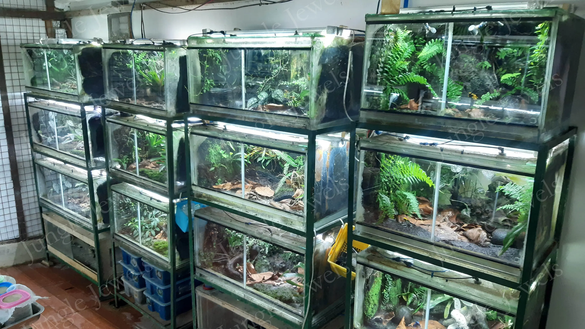
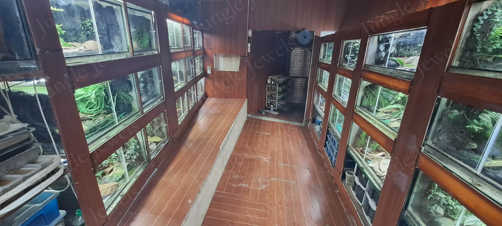
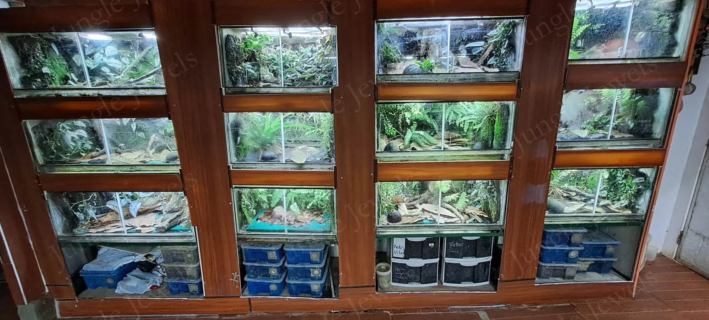
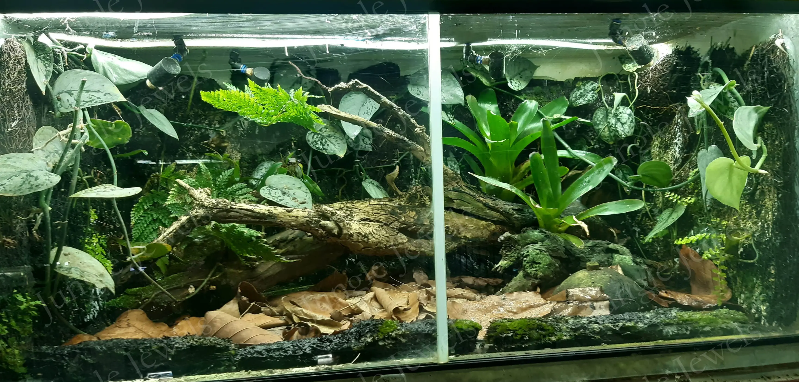
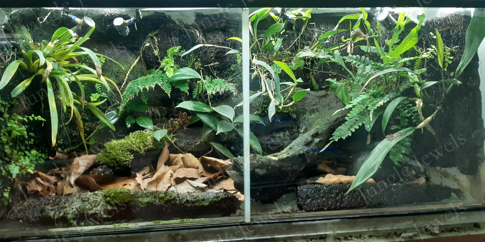

Although these animals live in humid areas with a lot of rain, fresh air is essential. Stagnant air in the terrarium, stagnant water, too high humidity all day round will result in diseases and might be fatal. At JungleJewels we prefer double bottom tanks, with an inclined upper bottom. The excess water can flow easily into the front ditch and eventually into a drain. Our tanks have 2 areas covered with mosquito screen, one is just under the sliding door, the other covers almost the entire ceiling. This ensures a continuous airflow. Misting the tank can be accomplished by a handheld sprayer, pressure sprayer or even an automatic misting system with water tank, pump, and nozzles. The latter is particularly convenient, as in case many tanks have to be sprayed.
Keeping those beauties in captivity requires a lot of dedication from the keeper. Temperature and humidity control is a must in order to keep them happy or even achieve offsprings. Too low temps, wrong humidity, insufficient ventilation, unbalanced diet are common mistakes, which may lead to illnesses, and eventually death. Too high temperature, even for a short period, is fatal.






